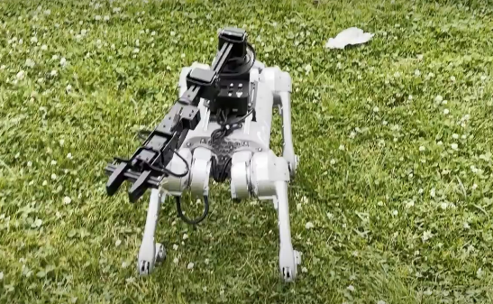

Publications
A complete list of publications can also be found on my Google Scholar profile.
Books

Agile Autonomy: Learning High-Speed Vision-Based Flight
Springer Tracts in Advanced Robotics, 2022
Publications


Conformal Policy Learning for Sensorimotor Control Under Distribution Shifts
International Conference on Robotics and Automation (ICRA),
2024

Learning Visual Locomotion with Cross-Modal Supervision
International Conference on Robotics and Automation (ICRA),
2023


AutoTune: Controller Tuning for High-Speed Flight
IEEE Robotics and Automation Letters (RA-L) and ICRA,
2022
Learning High-Speed Flight in the Wild
Science Robotics, 2021
Fontier of Science Award, 2023
Agile Autonomy: High-Speed Flight with On-Board Sensing and Computing
Conference on Robotics and Intelligent Machines (I-RIM3D),
2020
Best Paper Award Finalist!


Learning Depth with Very Sparse Supervision
IEEE Robotics and Automation Letters (RA-L) and IROS,
2020


A General Framework for Uncertainty Estimation in Deep Learning
IEEE Robotics and Automation Letters (RA-L) and ICRA,
2020

Event-based Vision Meets Deep Learning on Steering Prediction for Self-driving Cars
IEEE Conference on Computer Vision and Pattern Recognition
(CVPR), 2018


Efficient Descriptor Learning for Large Scale Localization
IEEE International Conference on Robotics and Automation
(ICRA), 2017
PhD Thesis
Agile Autonomy: Learning High-Speed Vision-Based Flight
PhD Thesis, University of Zurich, 2021
Georges Giralt PhD Award, 2022